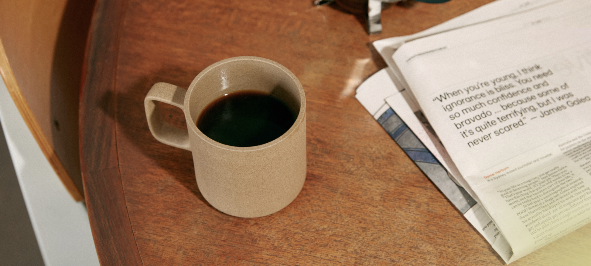
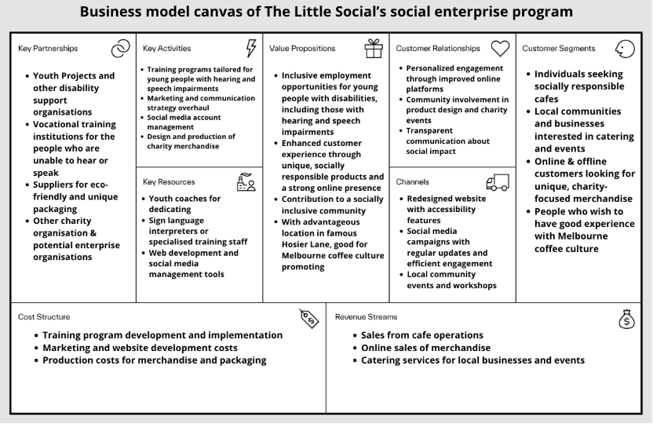
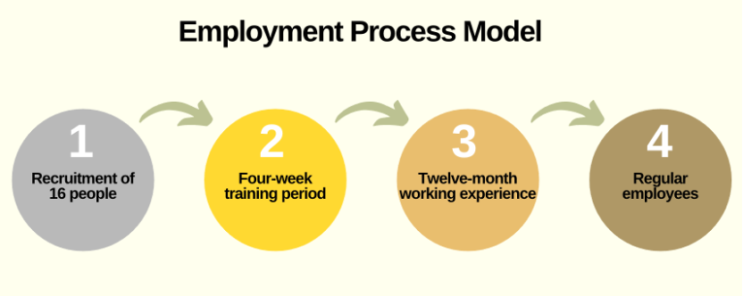
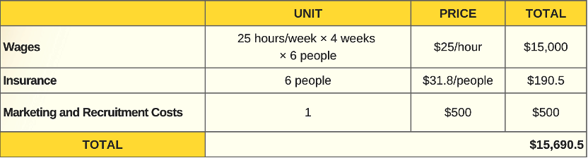
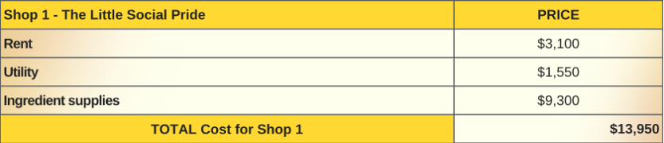
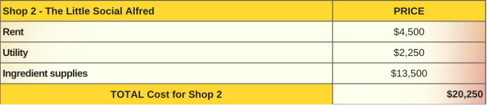
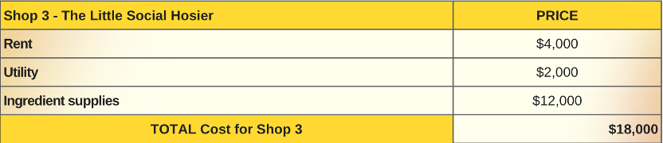
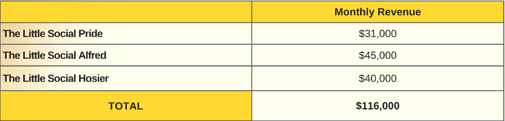

The Big Issue | The Little Social
Social Impact, Brand Revamp, Community Engagement
2024
Project Overview
Challenge: Support the social inclusion of hearing- and speech-impaired individuals by helping The Little Social Café integrate accessible hiring, communication, and training strategies.
Deliverables: Brand revamp; Business Model; Ordering Guide; Employment Process Model; Funding Source & Budget.
Role: Project lead, researcher, consultant.
The Overview
The Australian Bureau of Statistics (ABS) shows that of the 3 million unemployed and underemployed Australians, a high share comes from marginalized groups, including people with disabilities. The unemployment rate for people with disabilities is 10% versus 5.9% overall. In 2022, 53% of Australians aged 15–64 with disabilities participated in the labour force; only 27% of those with severe or profound disabilities were employed.
The Objective
The team proposed partnering with The Little Social Café to recruit deaf and mute individuals while enhancing café performance through a website redesign, social media updates, and new peripheral products—creating a win-win that boosts both social inclusion and business outcomes.
The Little Social Café
The Little Social operates as a social-enterprise café under Youth Projects, with support from disability-services organisations. It has established frameworks for disability employment and training, resulting in cost-effective operations. Complimentary training like the NDIS Quality and Safeguards Commission’s “Supporting Effective Communication” and Alison’s Free Online Disability Courses further empower participants. Strategic alliances with suppliers and charities provide ongoing support and eco-friendly packaging collaborations.
The Process
Understanding Pain Points and Needs
Expand the program to include sensory and speech-disabled participants through barista training and internships at The Little Social. This builds professional skills, confidence, and community belonging. The client currently uses Superprof to coordinate classes.
- Manage accessible social media (text-to-speech, clear contact info).
- Offer sign-language and sensitivity training; integrate inclusive design into décor and packaging.
- Collaborate with local disability organisations for charity events and workshops.
Location
The Little Social has three Melbourne sites:
- 7–9 Hosier Ln
- 75 Commercial Rd (The Alfred)
- 79–81 Fitzroy St (Victorian Pride Centre)
Personas
Business Model
Business Model
Employment Process Model
Funding Source & Budget
Funded by three sources:
- Victorian Government – $5,000
- Youth Projects – $5,000
- Café profits – remaining funds
Training 16 participants over four weeks: $15,040
Wages & insurance for 6 trainees over 12 months: $15,690.50
Monthly operating cost for 3 shops: $52,200
Expected monthly sales: $116,000+
Training Cost & Funding
Monthly Trained Employee Expenses
  Operating Cost
Projected Revenue & Profit
Risks & Contingencies
Risk: Cost Control
Training duration and material costs must be managed to prevent budget overruns. Utility and raw-material expenses also need strict monitoring.
Contingency: Communication
Deaf-mute training requires technical support for sign-language facilitation. In-person interactions may still lead to misunderstandings; managers should prepare emergency communication plans.